MOEA (módulo)¶
En esta parte se encuentran desarrolladas todas las técnicas
concernientes al uso de M.O.E.A.’s (Multi-Objective Evolutionary Algorithms
ó Algoritmos Evolutivos Multiobjetivo).
Un M.O.E.A. es la convergencia y culminación de todas las técnicas que se
han implementado en la sección Model (ó Modelo) con la finalidad de
ofrecer una solución óptima ante un problema multiobjetivo mediante el
uso de Algoritmos Evolutivos.
Primero, solucionar un problema multiobjetivo aterrizado en un lenguaje matemático consiste en lo siguiente:
Tenemos un vector de funciones objetivo:
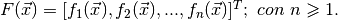
Donde:
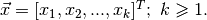
Representa al vector de variables de decisión que “alimenta” a cada función objetivo.
La meta es encontrar un vector especial de variables de decisión, llamémosle:
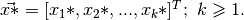
Tal que:
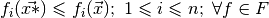.
Dicho de otra forma, se debe encontrar el vector de variables de decisión que minimize todas y cada una de las
funciones objetivo en existencia.
Adicionalmente, todo vector de variables de decisión debe estar sujeto a las restricciones:
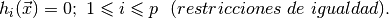
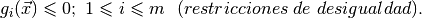
Las cuales para fines de este proyecto son aquéllas a las que se encuentran afianzadas
las variables de decisión (véase View/Main/DecisionVariable/VariableFrame.py)
Una definición adicional que sin lugar a dudas se verá utilizada es la de dominancia entre vectores de variables de decisión,
para ello tomemos dos vectores 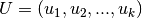 y 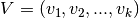, se dice
que U domina a V ó V es dominada por U si:
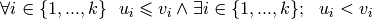.
Lo anterior significa que  debe ser mejor que
debe ser mejor que  en cada uno de sus componentes para garantizar la dominancia.
en cada uno de sus componentes para garantizar la dominancia.
debe ser mejor que en cada uno de sus componentes para garantizar la dominancia.La simbología que se suele usar para identificar este hecho es 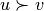.
Algo importante a mencionar es que en las definiciones se trata únicamente la minimización
de funciones objetivo porque, en caso de querer la maximización, simplemente se realiza la
sustitución:
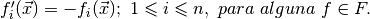
Es decir, minimizando la función negativa se obtiene el máximo. El proyecto ya contempla este tipo
de casos (véase View/Main/ObjectiveFunction/FunctionFrame).
Como dato adicional, es menester añadir que, en un escenario típico muchas de las funciones
objetivo entrarán en conflicto, esto quiere decir que en algunas se buscará el mínimo mientras
que en otras, el máximo.
Con base en lo anterior, el funcionamiento de un M.O.E.A. (resolver un problema de optimización
multiobjetivo usando algoritmos genéticos) generalmente se lleva a cabo de la siguiente manera:
1.- Usando una Representación Cromosómica (véase Model/ChromosomalRepresentation), crear la Población Padre y evaluar cada uno de los Individuos respecto a las funciones objetivo.
2.- Asignar un Ranking a los Individuos de la Población Padre (véase Model/Community/Community.py).
3.- Con base en el Ranking, asignar el Fitness a cada uno de los Individuos (véase Model/Fitness).
4.- Tomando en cuenta el Fitness, aplicar las operaciones de Selección, Cruza y Mutación con la finalidad de crear una Población Hija (véase Model/GeneticOperator). Todos los métodos empleados en este punto deben funcionar acorde a la Representación Cromosómica del punto 1.
5- (Opcional) Utilizar el Fitness Compartido para aplicar una elección más minuciosa de los mejores Individuos en la Población Hija (véase Model/SharingFunction).
6.- Designar a la población Hija como la nueva población Padre.
7.- Repetir los pasos 2 a 6 hasta haber alcanzado un número límite de generaciones (iteraciones).
A grandes rasgos la diferencia entre un M.O.E.A. y otro es la Presión Selectiva
(ó Selective Pressure) que se aplica durante el procedimiento, para fines de este proyecto
se trata de la tolerancia para seleccionar a los Individuos de calidad media o baja frente a los
mejores. Una baja Presión Selectiva permite elegir Individuos no tan aptos; el caso es análogo para
una alta Presión Selectiva.
Es por eso que se han tomado los M.O.E.A.’s más representativos, pues se desea ilustrar la
consistencia y eficacia de dichos métodos en general a través de variadas circunstancias.
Tomando en cuenta lo anterior, la finalidad es que el usuario desarrolle
sus propios M.O.E.A.’s, por ello es que, además de además de añadir
el método en el listado localizado en Controller/XML/Features.xml, deberá implementar la siguiente función:
-
execute_moea(execution_task_count,generations_queue,generations,population_size,vector_functions,vector_variables,available_expressions,number_of_decimals, -
community_instance,algorithm_parameters,representation_instance,representation_parameters,fitness_instance,fitness_parameters, -
sharing_function_instance,sharing_function_parameters,selection_instance,selection_parameters,crossover_instance,crossover_parameters, -
mutation_instance,mutation_parameters): - Devuelve la solución óptima para un conjunto de funciones objetivo vector_functions ligadas a un conjunto de restricciones vector_variables tomando como fundamento el uso de algoritmos genéticos.El método se apoya de las características subyacentes; en lo concerniente a la devolución de resultados se recomienda ver el método get_results localizado en Model/Community/Community.py.
Parameters: - execute_task_count (Integer) – El identificador que se utiliza para orquestar el orden en que el método será ejecutado con respecto de los demás (véase View/Additional/ResultsGrapher/ResultsGrapherTopLevel.py).
- generations_queue (Instance) – Una estructura auxiliar (Queue o Cola) que es necesaria para indicar a la interfaz gráfica el progreso del método (véase Controller/Controller.py, View/MainWindow.py, View/Additional/ResultsGrapher/ResultsGrapherTopLevel.py) .
- generations (Integer) – El número de generaciones (iteraciones) que se emplearán para la ejecución del método.
- population_size (Integer) – El tamaño de la Población (número de Individuos).
- vector_functions (List) – El vector con las funciones objetivo insertadas por el usuario.
- vector_variables (List) – El vector con las variables de decisión ingresadas por el usuario.
- available_expressions (Dictionary) – Un diccionario con expresiones creadas para que la evaluación de funciones objetivo sea mucho más sencilla (véase Controller/Verifier.py, Controller/XML/PythonExpressions.xml, View/Additional/MenuInternalOption/InternalOptionTab/PythonExpressionFrame.py).
- number_of_decimals (Integer) – La precisión decimal (número de decimales) que tendrán las soluciones inherentes a los Individuos.
- community_instance (Instance) – Una instancia de la clase Community (véase Controller/Verifier.py, Model/Community/Community.py).
- algorithm_parameters (Instance) – Un diccionario para añadir opciones adicionales para los M.O.E.A.’s.
- representation_instance (Instance) – Una instancia de la técnica de Representación Cromosómica (ó Chromosomal Representation) usada por el usuario (véase Controller/Verifier.py, Model/ChromosomalRepresentation).
- representation_parameters (Dictionary) – Un diccionario con opciones adicionales a la técnica de Representación Cromosómica usada.
- fitness_instance (Instance) – Una instancia de la técnica de Fitness seleccionada por el usuario (véase Controller/Verifier.py, Model/Fitness).
- fitness_parameters (Dictionary) – Un diccionario con parámetros adicionales para la técnica de Fitness utilizada.
- sharing_function_instance (Instance) – Una instancia de la técnica de Sharing Function (ó Función de Compartición) usada por el usuario (véase Controller/Verifier.py, Model/SharingFunction).
- sharing_function_parameters (Dictionary) – Un diccionario con opciones adicionales para la técnica de Sharing Function seleccionada.
- selection_instance (Instance) – Una instancia de la técnica de Selection (ó Selección) seleccionada por el usuario (véase Controller/Verifier.py, Model/Operator/Selection).
- selection_parameters (Dictionary) – Un diccionario con opciones adicionales para la técnica de Selection empleada.
- crossover_instance (Instance) – Una instancia de la técnica de Crossover (ó Cruza) seleccionada por el usuario (véase Controller/Verifier.py, Model/Operator/Crossover).
- crossover_parameters (Dictionary) – Un diccionario con parámetros adicionales para la técnica de Cruza solicitada.
- mutation_instance (Instance) – Una instancia de la técnica de Mutation (ó Mutación) empleada por el usuario (véase Controller/Verifier.py, Model/Operator/Mutation).
- mutation_parameters – Un diccionario con parámetros adicionales para la técnica de Mutación usada.
Returns: El diccionario que resulta de aplicar el método get_results que se encuentra en Model/Community/Community.py.
Return type: Dictionary
A continuación se muestra la lista de los M.O.E.A.’s implementados: